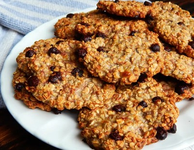

Galletitas de Avena

Ingredientes:
100gr de Azúcar
1/4 de taza de aceite
1 huevo
1/2 cdita. de polvo de hornear
1/2 cdita. de bicarbonato
1/2 cdita. de sal
80g de harina de trigo común
180 g de avena
Opcional:Manzana picada, pasas de uva, maní sin sal, nueces.
Preparación:
Poner en un bol el azúcar y el aceite. Mezclar bien.
Agregar el huevo y mezclar bien hasta que se integre.
Agregar el polvo para hornear, bicarbonato y sal.Mezclar.
Añadir la harina y la avena.
Si se desea puede agregar pasas, manzanas, maní y/o nueces.
Formar galletitas y colocarlas en un molde con papel manteca. Hornear a 190°C por 15 min, o hasta ver que estén doradas en las orillas.
Dejar enfriar para sacar del papel.